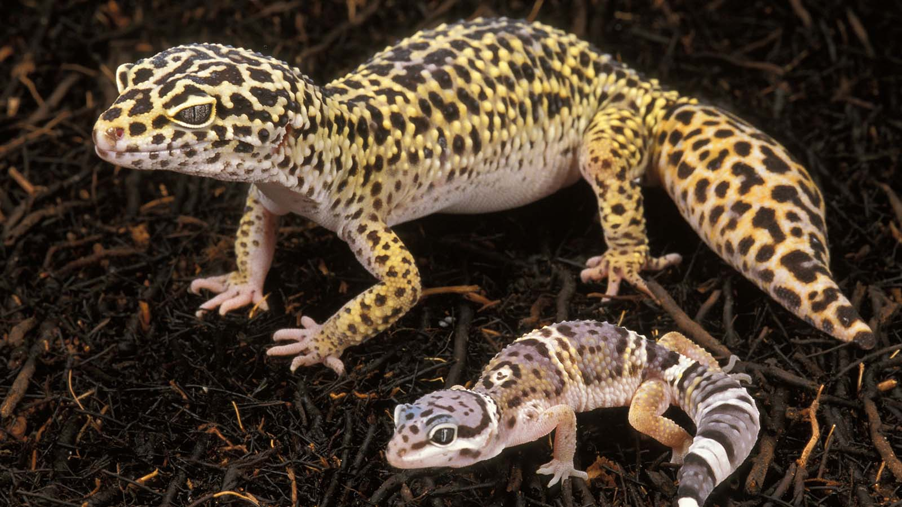

Description:
The garter snake is a great starter reptile especially if you want a snake. It's small, skinny and NON-VENOMOUS!
This means if it bites you you'll be A-Okay. Garter snakes are great because they have a good appetite and are dinural creatures
awake by day and asleep by night. They're also very affordable and cool with multiple different morfs. All in all it's a great
first reptile pet.
What You Will Need:
A 20 gallon tank(I would
suggest one with a sliding lid to prevent your snake from escaping. Also if this is too expensive for you, you can try to buy a used
one from ebay, offerup, etc.)
What They Eat:
Garter snakes eat fish, they can survive on worms and crickets but in order for them to get all their nutrition they need fish or mice.
However due to snakes size finding mice the right size will be challanging also mice are pretty gross to feed to snake. I'd say you're
better off buying raw Salmon, Tilapia or Sunfish and feeding it to them in small pieces about the size of their head. However it is very
important to feed them fish that has fully thawed and at room tempurature. If you prefer a live option you can feed them live minnos
which you should be able to find at a local petshop. Just make sure to call ahead to ask if their minnos are safe to eat and let them
know you're planning to feed it to a snake.
Leopard Gecko

Description: The Leopard Gecko is another great first reptile pet. It is small, affordable and pretty easy to take care of. The Leopard Gecko
is Non-Venomous. However they are nocturnal meaning they sleep during the day and are wake at night. Therefore when you see them during the day they
wont be very active. It also means any escape that may happen will happen at night so keep that in mind.
What You Will Need:
A 20 gallon tank(I would
suggest one with a sliding lid to prevent your snake from escaping. Also if this is too expensive for you, you can try to buy a used
one from ebay, offerup, etc.)
What They Eat:
Leopard Geckos must eat live insects. They can eat Crickets, wax worms, calci-worms and meal worms. You can buy these things at a local pet shop such as pet
smart, petco and most other local petshops.
BallPython
Description: BallPythons are definitely the most difficult to take care of on this whole list, not because they're difficult just because they have the most needs.
They require higher humidity, grow to be much bigger and are more likely to bite than the other ones on this list. However they're Non-Venomous and most of
time are in a little ball. Males can grow anywhere from 3-4 feet, females can grow up to anywhere from 3-5 however there are rare cases of 6 feet female ball pythons. It
may sound intimidating since they can grow to be so big but they are usually coiled into a ball making them appear smaller however I would recomond keeping them away from
your neck for your own saftey.
What They Eat:
Ball pyhtons can only eat Mice and Rats. You can choose to by them frozen but live is the best option. You can find frozen mice at pet smart but for live mice your going to
have to call and ask some local petshops. Talk to the person you buy your ball python from about what size mouse you will need. A good reference is the mouse should about the
size as the thickesy part of the snakes body. Something you should know is that the mouse will be bigger than the snakes head. What You Will Need:
A 40 gallon tank
(You can start with a 20 gallon tank but you will have to upgrade to a bigger tank as the snake grows.I would suggest one with a sliding lid to prevent your snake from escaping. Also if this is too expensive for you, you can try to buy a used
one from ebay, offerup, etc.)